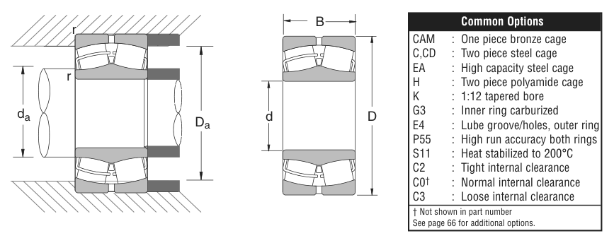

Original catalogue drawing - NSK catalogue, page 79

Scanned from the manufacturer catalogue page listing this part number. All part numbers printed on that table share the same drawing.
Scale cross-section
Blue = inner / outer ring, yellow = rolling element. Drawn to scale from this part's own
dimensions for selection reference only - not a manufacturing or assembly drawing.
Dimension table (mm / inch)
Symbol
Dimension
mm
inch
d
Bore diameter
140
5.5118
D
Outside diameter
210
8.2677
B
Inner-ring / bearing width
53
2.0866
Notes
Weights are given in kg. Load ratings are shown in both the original catalogue units and the converted value (1 N = 0.2248 lbf). Data is provided for selection reference only - confirm against the latest official catalogue before ordering.
Main dimensions
Bore d (mm)
140
Bore d (in)
5.5118
Outside dia. D (mm)
210
Outside dia. D (in)
8.2677
Width B (mm)
53
Width B (in)
2.0866
Load ratings & speeds
Basic dynamic load rating Cr (lbs)
94500
Basic static load rating Cor (lbs)
161000
Limiting speed - grease (rpm)
1,600
Limiting speed - oil (rpm)
1,900
Weight
Weight (kg)
6.4
Mounting dimensions (fillets / shoulders)
Chamfer r (in)
0.078
Shaft shoulder da min (in)
5.91
Shaft shoulder da max (in)
6.18
Housing shoulder Da min (in)
7.46
Housing shoulder Da max (in)
7.87
Bearing life (ISO 281 basic rating life)
C / P
Equivalent load P (N)
L10 (106 rev)
L10h at 500 rpm
4
105,089
102
3,386
6
70,059
392
13,083
8
52,545
1,024
34,133
10
42,036
2,154
71,814
15
28,024
8,323
277,449
Basic rating life per ISO 281: L10 = (C/P)10/3 with C = 420,357 N. Hours = L10 x 106 / (60n). Life-modification factors for lubrication, contamination and temperature (aISO) are not included.
Source & traceability
Brand
NSK
Source catalogue
NSK inch product catalogue
Catalogue page
p.81 (dimensions) / p.82 (ratings)
Dimensions in inches and millimetres, load ratings in lbs.
Send us the quantity you need and we will come back with price and
lead time, normally within 24 hours. Equivalent parts from other brands can be quoted at the same time.